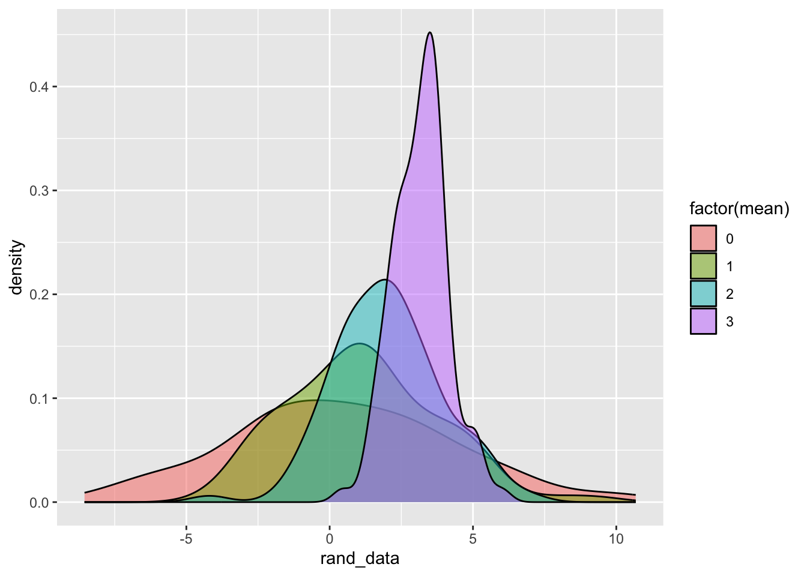

12 Iteration II
🧩 Learning Goals
By the end of this lesson, you should be able to:
- Use the
map()family of functions in thepurrrpackage to handle repeated tasks that create output, instead offorloops - Use the
walk()family of functions in thepurrrpackage to handle repeated tasks that need side-effects, instead offorloops
Iteration Review
Let’s write a for loop that stores the class() (type) of every column in the mtcars data frame.
Yes, str() does this plus more for you. Let’s consider replicating this task through low-level iteration.
Recall that:
-
vector("numeric/logical/character/list", length)creates a storage container. -
mtcars[[1]]accesses the first element/column of the data frame.
✏️ Get Column Classes
First, write out the steps in words. Then translate each step to code.
Code
mpg cyl disp hp drat wt qsec vs
"numeric" "numeric" "numeric" "numeric" "numeric" "numeric" "numeric" "numeric"
am gear carb
"numeric" "numeric" "numeric" Iteration with purrr
purrr is a tidyverse package that provides several useful functions for iteration.
Open up the purrr cheatsheet.
The main advantages of purrr include:
- Improved readability of R code
- Reduction in the “overhead” in writing a
forloop- These functions create storage containers
- These functions do the
for (i in ...)efficiently
Computational Time & Memory Allocation
Compare the four ways to create a vector of integers from 1 to 100,000.
Code
# Example 1: For loop with no storage container; append new value to existing vector
x <- integer()
results1 <- bench::mark(
for (i in 1:1e5) {
x <- c(x, i)
}
)
# Example 2: For loop with a storage container!
x <- vector('integer', length = 1e5)
results2 <- bench::mark(
for (i in 1:1e5) {
x[i] <- i
}
)
# Example 3: purrr::map()
results3 <- bench::mark(purrr::map_int(1:1e5, ~.x))
# Example 4: Standard R Function/Operator
results4 <- bench::mark(seq(1,1e5))Code
# A tibble: 4 × 3
type mem_alloc total_time
<chr> <bch:byt> <bch:tm>
1 for_loop_no_storage 18.6GB 19.3s
2 for_loop_with_storage 402.2KB 496.9ms
3 purrr_map 397.5KB 81.4ms
4 standard_func 0B 21.2msIteration with map
In purrr, we can use the family of map() functions to iteratively apply a function to each element of a list or vector and save its output.
- Reminder: Data frames/tibbles are named lists so the elements are the “columns” so
map()can iterate over columns of a dataset.
Let’s look at the purrr cheatsheet to look at graphical representations of how these functions work.
-
map()returns a list -
map_chr()returns a character vector -
map_lgl()returns a logical vector -
map_int()returns an integer vector -
map_dbl()returns a numeric vector -
map_vec()returns a vector of a different (non-atomic) type (like dates)
Replicate str()
Let’s return to our original task to replicate str().
To get the class() of each data frame column, map_chr() is sensible because classes are strings:
mpg cyl disp hp drat wt qsec vs
"numeric" "numeric" "numeric" "numeric" "numeric" "numeric" "numeric" "numeric"
am gear carb
"numeric" "numeric" "numeric" Let’s get the class of each variable in diamonds:
Error in `map_chr()`:
ℹ In index: 2.
ℹ With name: cut.
Caused by error:
! Result must be length 1, not 2.What happened!?
map_chr() was expecting to create a character vector with one element per element (column) in diamonds. But something happened in column 2 with the cut variable.
Let’s figure out what happened:
Ah! cut has 2 classes. In this case, map() (which returns a list) is the best option because some variables have multiple classes:
$carat
[1] "numeric"
$cut
[1] "ordered" "factor"
$color
[1] "ordered" "factor"
$clarity
[1] "ordered" "factor"
$depth
[1] "numeric"
$table
[1] "numeric"
$price
[1] "integer"
$x
[1] "numeric"
$y
[1] "numeric"
$z
[1] "numeric"The error we encountered with map_chr() is a nice feature of purrr because it allows us to be very sure of the type of output we are getting.
Failing loudly is vastly preferable to getting unexpected outputs silently
Tidy Selection
Recall that we explored syntax and functions for selecting variables in a data frame via the tidy-select documentation for across. (?dplyr_tidy_select in the Console.)
We can also combine map_*() functions with tidy selection for some powerful variable summaries that require much less code than for loops.
carat depth table price x y
0.7979397 61.7494049 57.4571839 3932.7997219 5.7311572 5.7345260
z
3.5387338 Code
cut color clarity
5 7 8 ✏️ Summarize Variables
We want to compute several summary statistics on each quantitative variable in a data frame and organize the results in a new data frame (rows = variables, columns = summary statistics).
- Write a function called
summ_stats()that takes a numeric vectorxas input and returns the mean, median, standard deviation, and IQR as a data frame. You can usetibble()to create the data frame.- Example:
tibble(a = 1:2, b = 2:3)creates a data frame with variablesaandb.
- Example:
- Use a
map*()function frompurrrto get the summary statistics for each quantitative variable indiamonds. - Look up the
bind_rows()documentation fromdplyrto combine summary statistics for all quantitative variables into one data frame.- Note: You’ll notice that the variable names are not present in the output. Try to figure out a way to add variable names back in with
mutate()andcolnames().
- Note: You’ll notice that the variable names are not present in the output. Try to figure out a way to add variable names back in with
Once you’ve done that with map(), write a for loop to achieve the same result. Which do you prefer in terms of ease of code writing and readability?
Code
summ_stats <- function(x) {
tibble(
mean = mean(x, na.rm = TRUE),
median = median(x, na.rm = TRUE),
sd = sd(x, na.rm = TRUE),
IQR = IQR(x, na.rm = TRUE)
)
}
numeric_diamonds <- diamonds |>
select(where(is.numeric))
# Using map()
map_summary <- map(numeric_diamonds, summ_stats) |>
bind_rows() |>
mutate(variable = names(numeric_diamonds), .before = 1)
map_summary# A tibble: 7 × 5
variable mean median sd IQR
<chr> <dbl> <dbl> <dbl> <dbl>
1 carat 0.798 0.7 0.474 0.64
2 depth 61.7 61.8 1.43 1.5
3 table 57.5 57 2.23 3
4 price 3933. 2401 3989. 4374.
5 x 5.73 5.7 1.12 1.83
6 y 5.73 5.71 1.14 1.82
7 z 3.54 3.53 0.706 1.13Code
# A tibble: 7 × 5
variable mean median sd IQR
<chr> <dbl> <dbl> <dbl> <dbl>
1 carat 0.798 0.7 0.474 0.64
2 depth 61.7 61.8 1.43 1.5
3 table 57.5 57 2.23 3
4 price 3933. 2401 3989. 4374.
5 x 5.73 5.7 1.12 1.83
6 y 5.73 5.71 1.14 1.82
7 z 3.54 3.53 0.706 1.13Iteration with map2 or pmap
If you need to iterate over the rows of a data frame, we’ll need other versions of map().
purrr also offers map2() and the pmap() family of functions that take multiple inputs and loops over them simultaneously.
Let’s look at the purrr cheatsheet to look at graphical representations of how these functions work.
Let’s look at this code to randomly simulate data from Normal distributions.
Code
# A tibble: 4 × 4
n mean sd rand_data
<dbl> <dbl> <dbl> <list>
1 100 0 4 <dbl [100]>
2 100 1 3 <dbl [100]>
3 100 2 2 <dbl [100]>
4 100 3 1 <dbl [100]>Note how the column names in args exactly match the argument names in rnorm().
The iteration that is happening is across rows, and the multiple arguments in rnorm() are being matched by name.
To access the information in that rand_data list, we need to unnest() this list! It converts/unfolds the information into a numeric vector (repeating the information in mean, sd, n)
Code

We can also use pmap() to specify variations in some arguments but leave some arguments constant across the iterations:
✏️ Use pmap() with str_sub()
Create 2 small examples that show how pmap() works with str_sub(). Your examples should:
- Use different arguments for
string,start, andend - Use different arguments for
startandendbut a fixedstring
Code
[1] "iter" "alest" "stics"Code
[1] "Mac" "ale" "ste"✏️ Fit Model Variations
Last class we worked on an extended exercise where our goal was to write a series of functions and a for loop to repeat linear model fitting under different “settings” (removal of outliers, model formula choice).
Repeat this exercise using pmap().
- You’ll need to use the
df_arg_combosobject, yourremove_outliers()function, and yourfit_model()function. - Review the solutions below for the necessary parts and make sure you understand each part.
- Then, try to put it all together using
pmap().
Code
# A tibble: 8 × 2
mod_formula remove_outliers
<chr> <lgl>
1 price ~ carat FALSE
2 price ~ carat TRUE
3 price ~ carat + cut FALSE
4 price ~ carat + cut TRUE
5 price ~ carat + cut + clarity FALSE
6 price ~ carat + cut + clarity TRUE
7 price ~ carat + cut + clarity + color FALSE
8 price ~ carat + cut + clarity + color TRUE Code
remove_outliers <- function(data, what_var, sd_thresh) {
data |>
mutate(zscore = ({{ what_var }} - mean({{ what_var }}, na.rm = TRUE))/sd({{ what_var }}, na.rm = TRUE)) |>
filter(zscore <= sd_thresh)
}
fit_model <- function(data, mod_formula, remove_outliers) {
if (remove_outliers) {
data_clean <- remove_outliers(data, what_var = carat, sd_thresh = 3)
} else {
data_clean <- data
}
lm(mod_formula, data = data_clean)
}
# use pmap()
models <- pmap(
df_arg_combos,
fit_model,
data = diamonds
)
models[[1]]
Call:
lm(formula = mod_formula, data = data_clean)
Coefficients:
(Intercept) carat
-2256 7756
[[2]]
Call:
lm(formula = mod_formula, data = data_clean)
Coefficients:
(Intercept) carat
-2354 7898
[[3]]
Call:
lm(formula = mod_formula, data = data_clean)
Coefficients:
(Intercept) carat cut.L cut.Q cut.C cut^4
-2701.38 7871.08 1239.80 -528.60 367.91 74.59
[[4]]
Call:
lm(formula = mod_formula, data = data_clean)
Coefficients:
(Intercept) carat cut.L cut.Q cut.C cut^4
-2782.90 8012.63 1179.04 -465.31 337.40 90.91
[[5]]
Call:
lm(formula = mod_formula, data = data_clean)
Coefficients:
(Intercept) carat cut.L cut.Q cut.C cut^4
-3187.540 8472.026 713.804 -334.503 188.482 1.663
clarity.L clarity.Q clarity.C clarity^4 clarity^5 clarity^6
4011.681 -1821.922 917.658 -430.047 257.141 26.909
clarity^7
186.742
[[6]]
Call:
lm(formula = mod_formula, data = data_clean)
Coefficients:
(Intercept) carat cut.L cut.Q cut.C cut^4
-3211.955 8604.166 693.601 -310.001 176.420 9.009
clarity.L clarity.Q clarity.C clarity^4 clarity^5 clarity^6
3790.470 -1546.330 694.758 -294.293 178.926 56.096
clarity^7
181.933
[[7]]
Call:
lm(formula = mod_formula, data = data_clean)
Coefficients:
(Intercept) carat cut.L cut.Q cut.C cut^4
-3710.603 8886.129 698.907 -327.686 180.565 -1.207
clarity.L clarity.Q clarity.C clarity^4 clarity^5 clarity^6
4217.535 -1832.406 923.273 -361.995 216.616 2.105
clarity^7 color.L color.Q color.C color^4 color^5
110.340 -1910.288 -627.954 -171.960 21.678 -85.943
color^6
-49.986
[[8]]
Call:
lm(formula = mod_formula, data = data_clean)
Coefficients:
(Intercept) carat cut.L cut.Q cut.C cut^4
-3724.322 9007.286 675.568 -301.591 167.295 6.644
clarity.L clarity.Q clarity.C clarity^4 clarity^5 clarity^6
3982.636 -1541.736 689.208 -219.693 135.996 32.560
clarity^7 color.L color.Q color.C color^4 color^5
104.156 -1925.179 -613.256 -163.611 29.485 -72.600
color^6
-49.973 Iteration with walk
If we don’t care about saving an output for each iteration, we can use the family of walk() functions (walk, walk2, and pwalk) to apply a function to each element of a list or vector with no output.
Let’s say, we wanted to visualize the relationship between carat and price by clarity.
If we wanted a fully stratified (fully separated) analysis, we could create one visualization per clarity category and save it separately.
First, let’s create separate datasets that are still contained in one tibble.
Code
# A tibble: 6 × 2
clarity data
<ord> <list<tibble[,9]>>
1 I1 [741 × 9]
2 SI2 [9,194 × 9]
3 SI1 [13,065 × 9]
4 VS2 [12,258 × 9]
5 VS1 [8,171 × 9]
6 VVS2 [5,066 × 9]Code
# A tibble: 6 × 3
clarity data path
<ord> <list<tibble[,9]>> <glue>
1 I1 [741 × 9] diamonds-I1.png
2 SI2 [9,194 × 9] diamonds-SI2.png
3 SI1 [13,065 × 9] diamonds-SI1.png
4 VS2 [12,258 × 9] diamonds-VS2.png
5 VS1 [8,171 × 9] diamonds-VS1.png
6 VVS2 [5,066 × 9] diamonds-VVS2.pngDone!
- Check the ICA Instructions for how to (a) push your code to GitHub and (b) update your portfolio website